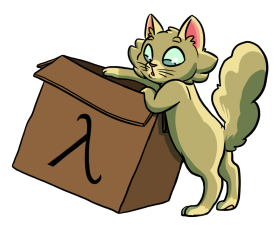

Часть 6. Cats и Circe
Страничка курса: https://maxcom.github.io/scala-course-2022/
План
- Cats
- Circe
Библиотека Cats
- Предоставляет абстракции функционального программирования
- Является основой для экосистемы чистих типизированных библиотек
* Название является шутливым сокращением слова "категория"
Библиотека Cats
Абстрактные котики, функциональный подход и теория категорий
Смешать, но не взбалтывать =)
Основные понятия
- Полугруппа (Semigroup)
- Моноид
- Функтор
- ??? (Semigroupal)
- Аппликатив
- Монада
- и др. страшные слова
Монады
(и связанные с ними концепции)Архитектурные строительные блоки, которые появляются в программах снова и снова.
т.е. являются для ФП эквивалентом шаблонов проектирования ООП
Их преимущества над ООП
- Формально (а, значит, очень точно) определены
- Являются максимально обобщёнными
Модули библиотеки Cats
некоторые из них находятся в собственных репозиториях
cats-kernel, cats-core
- набор type-классов
- минимальный набор структур данных для их поддержки
- экземпляры классов типов для этих структур данных и стандартных типов
cats-laws, cats-testkit,
cats-testkit-scalatest
- набор тестов для проверки собственных инстансов на соответствие законам
- поддерживается Specs2, ScalaTest, ScalaCheck и др.
cats-effect
- библиотека для ассинхронных вычисления
- основной тип IO - очень похож на Future, но более строгий
Полезные ссылки:
- Website: https://typelevel.org/cats
- Type classes: https://typelevel.org/cats/typeclasses
- Data types: https://typelevel.org/cats/datatypes
- Scala exercises: https://scala-exercises.org/cats
- Scala with Cats: https://scalawithcats.com
- Другие проекты экосистемы:
https://typelevel.org/cats/typelevelEcosystem

Рассмотрим наиболее полезные классы
Полугруппа
Определена операция
trait Semigroup[A] {
def combine(x: A, y: A): A
}Должна удовлетворять закону ассоциативности
combine(x, combine(y, z)) = combine(combine(x, y), z)Пример
Тип Int и операция сложения
import cats.Semigroup
implicit val intAdditionSemigroup = new Semigroup[Int] {
def combine(x: Int, y: Int): Int = x + y
}cats предоставляет infix-синтаксис для полугруп
import cats.implicits._
1 |+| 2Ещё примеры
- Тип String и операция "склеивания"
- Кортежи: пары, тройки и т.д.
Тип Map и операция merge
import cats.implicits._
val map1 = Map("hello" -> 1, "world" -> 1)
val map2 = Map("hello" -> 2, "cats" -> 3)
Semigroup[Map[String, Int]].combine(map1, map2)
// res5: Map[String, Int] =
// Map("hello" -> 3, "cats" -> 3, "world" -> 1)
map1 |+| map2
// res6: Map[String, Int] =
// Map("hello" -> 3, "cats" -> 3, "world" -> 1)Аналогично для List и других коллекций
Не надо изобретать велосипед:
инстансы этих классов и многих других уже есть в Cats
Моноид
Полугруппа с "нулём"
trait Semigroup[A] {
def combine(x: A, y: A): A
}
trait Monoid[A] extends Semigroup[A] {
def empty: A
}Также удовлетворяет закону ассоциативности
combine(x, combine(y, z)) = combine(combine(x, y), z)И дополнительно закон для "нуля":
combine(x, empty) = combine(empty, x) = xБольшинство полугрупп легко расширяются до моноида.
- Целые числа (Int, Long), сложение и 0
- Целые числа (Int, Long), умножение и 1
- String, конкатенация и пустая строка
"" - Коллекция, конкатенация и пустая коллекция того же типа:
- Map[A, B] и Map.empty[A, B]
- List[A] и List.empty[A]
- и др.
import cats.Monoid
implicit val intAdditionMonoid: Monoid[Int] = new Monoid[Int] {
def empty: Int = 0
def combine(x: Int, y: Int): Int = x + y
}val x = 1
Monoid[Int].combine(x, Monoid[Int].empty)
// res1: Int = 1
Monoid[Int].combine(Monoid[Int].empty, x)
// res2: Int = 1Cats предоставляет операции для коллекций над моноидами.
def combineAll[A: Monoid](as: List[A]): A =
as.foldLeft(Monoid[A].empty)(Monoid[A].combine)import cats.implicits._
combineAll(List(1, 2, 3))
// res: Int = 6import cats.implicits._
combineAll(List("hello", " ", "world"))
// res: String = "hello world"
import cats.implicits._
combineAll(List(
Map('a' -> 1),
Map('a' -> 2, 'b' -> 3),
Map('b' -> 4, 'c' -> 5)
))
// res: Map[Char, Int] = Map('b' -> 7, 'c' -> 5, 'a' -> 3)import cats.implicits._
combineAll(List(
Set(1, 2),
Set(2, 3, 4, 5)
))
// res: Set[Int] = Set(5, 1, 2, 3, 4)Не всякая полугруппа является моноидом
Но любая полугруппа может им стать, если её завернуть в Option!
Option[A] не является ни моноидом, ни полугруппой:
не определена операция combine
Но Option[A: Semigroup] является!
NonEmptyList - полугруппа, но не моноид
final case class NonEmptyList[A](head: A, tail: List[A]) {
def ++(other: NonEmptyList[A]) =
NonEmptyList(head, tail ++ other.toList)
def toList: List[A] = head :: tail
}implicit def nonEmptyListSemigroup[A] =
new Semigroup[NonEmptyList[A]] {
def combine(x: NonEmptyList[A], y: NonEmptyList[A]) = x ++ y
}implicit def optionMonoid[A: Semigroup] = new Monoid[Option[A]]
{
def empty: Option[A] = None
def combine(x: Option[A], y: Option[A]): Option[A] =
x match {
case None => y
case Some(xv) =>
y match {
case None => x
case Some(yv) => Some(xv |+| yv)
}
}
}Такое комбинирование пролучаем из
Semigroup.combineAllOption
import cats.data.NonEmptyList
val nel1 = NonEmptyList(1, List(2, 3))
val nel2 = NonEmptyList(4, List(5, 6))import cats.Monoid
import cats.implicits._
val lifted = List(nel1, nel2).map(nel => Option(nel))
Monoid.combineAll(lifted)
// res8: Option[NonEmptyList[Int]] =
// Some(NonEmptyList(1, List(2, 3, 4, 5, 6)))MonoidK
Моноид над тайп-классами
Monoid[A]
- Позволяет комбинировать значения A
- Существует "пустое" значение A, которое функционирует как "ноль"
MonoidK[F]
- Позволяет комбинировать два значения F[A]
- Для любого A существует "пустое" значение F[A]
- Комбинация и пустое значение зависят только от структуры F, но не от структуры A
Метод empty теперь параметризуется
типом элементов
Monoid[List[String]].empty
// res0: List[String] = List()
MonoidK[List].empty[String]
// res1: List[String] = List()
MonoidK[List].empty[Int]
// res2: List[Int] = List()Метод combineK теперь параметризуется
типом элементов
Monoid[List[String]].combine(
List("hello", "world"),
List("bye", "moon"))
// res1: List[String] = List("hello", "world", "bye", "moon")
MonoidK[List].combineK[String](
List("hello", "world"),
List("bye", "moon"))
// res2: List[String] = List("hello", "world", "bye", "moon")
MonoidK[List].combineK[Int](List(1, 2), List(3, 4))
// res3: List[Int] = List(1, 2, 3, 4)SemigroupK
Полугруппа над тайп-классами
Функтор
Контейнер с операцией map
trait Functor[F[_]] {
def map[A, B](fa: F[A])(f: A => B): F[B]
}
fa.map(f).map(g) = fa.map(f.andThen(g)) //composition
fa.map(x => x) = fa //identity
new Functor[Option] {
def map[A, B](fa: Option[A])(f: A => B): Option[B] =
fa match {
case None => None
case Some(a) => Some(f(a))
}
}
Cats предоставляет функцию lift
def lift[A, B](f: A => B): F[A] => F[B] = fa => map(fa)(f)
"превращает" функцию A => B
в функцию F[A] => F[B]
import cats.Functor
import cats.implicits._
val lenOption: Option[String] => Option[Int] =
Functor[Option].lift(_.length)
lenOption(Some("abcd"))
// res: Option[Int] = Some(4)
Cats предоставляет композицию функторов
import cats.Functor
import cats.implicits._
val listOpt = Functor[List] compose Functor[Option]
//Functor[List[Option]]
listOpt.map( List(Some(1), None, Some(3)) )(_ + 1)
// res: List[Option[Int]] = List(Some(2), None, Some(4))
Cats предоставляет функцию fproduct
def fproduct[A, B](fa: F[A])(f: A => B): F[(A, B)] =
map(fa)(a => a -> f(a))
import cats.Functor
import cats.implicits._
val source = List("Cats", "is", "awesome")
val product = Functor[List].fproduct(source)(_.length)
// res1: List[(String, Int)] =
// List((Cats,4), (is,2), (awesome,7))
product.toMap
// res2: Map[String,Int] =
// Map(Cats -> 4, is -> 2, awesome -> 7)
Semigroupal
trait Semigroupal[F[_]] {
def product[A, B](fa: F[A], fb: F[B]): F[(A, B)]
}
new Semigroupal[Option] {
def product[A, B](fa: Option[A],
fb: Option[B]): Option[(A, B)] =
if (fa.isDefined && fb.isDefined)
Some((fa.get, fb.get))
else None
}Аппликатив
trait Applicative[F[_]] extends Semigroupal[F] {
def product[A, B](fa: F[A], fb: F[B]): F[(A, B)]
def pure[A](a: A): F[A]
}Semigroupal с "нулём"
как моноид и полугруппа, но для функций
pure "заворачивает" значение в конструктор типа
trait Applicative[Option] {
def pure[A](a: A): F[A] = Some(a)
}trait Applicative[Future] {
def pure[A](a: A): F[A] = Future.successful[A](a)
}trait Applicative[List] {
def pure[A](a: A): F[A] = List(a)
}
fa.product(fb).product(fc) ~ fa.product(fb.product(fc)) //associativity
pure(()).product(fa) ~ fa //left identity
fa.product(pure(())) ~ fa //right identity
Эквивалентное определение
trait Applicative[F[_]] {
def ap[A, B](ff: F[A => B])(fa: F[A]): F[B]
def pure[A](a: A): F[A]
}На самом деле в cats
import cats.Functor
trait Applicative[F[_]] extends Functor[F] {
def ap[A, B](ff: F[A => B])(fa: F[A]): F[B]
def pure[A](a: A): F[A]
def product[A, B](fa: F[A], fb: F[B]): F[(A, B)] =
ap(map(fa)(a => (b: B) => (a, b)))(fb)
def map[A, B](fa: F[A])(f: A => B): F[B] = ap(pure(f))(fa)
}//TODO применения ap: https://typelevel.org/cats/typeclasses/applicative.html#what-is-ap
//TODO Applicatives compose
//TODO Traverse
//TODO На самом деле иерархия типов в cats гораздо сложнее и есть разные частные случаи - см. доку или исходники
Монада
НЕ ЗАБЫТЬ ИСПРАВТЬ ПЛАН!!!!!!!!!!!!!!!
Напоминаю:
- Страничка курса:
https://maxcom.github.io/scala-course-2022/